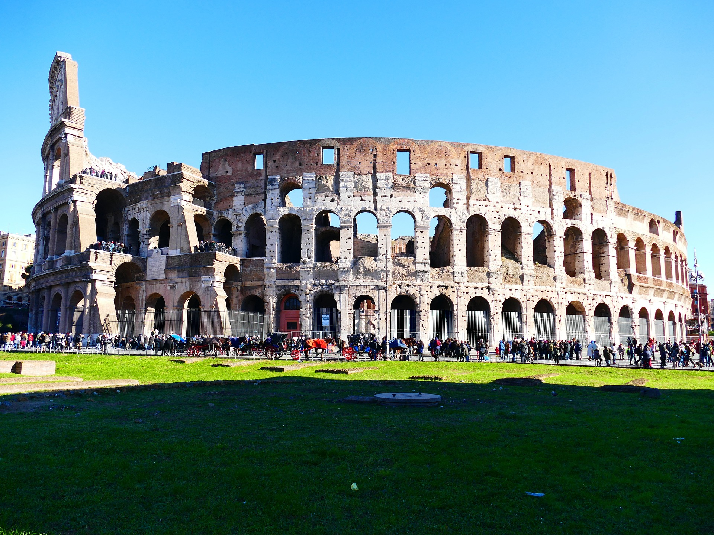
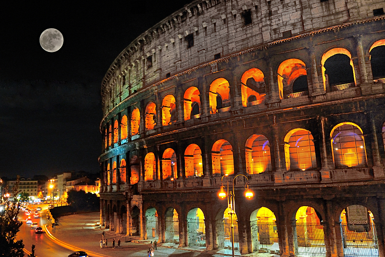

Le Colisée
Le Colisée (Colosseo en italien), à l'origine amphithéâtre Flavien (amphitheatrum Flavium en latin), est un immense amphithéâtre ovoïde situé dans le centre de la ville de Rome, entre l'Esquilin et le Cælius, le plus grand jamais construit dans l'Empire romain. Il est l'une des plus grandes œuvres de l'architecture et de l'ingénierie (en) romaines. Témoignage monumental de la propagande flavienne, sa construction, juste à l'est du Forum Romain, a commencé entre 70 et 72 apr. J.-C., sous l'empereur Vespasien, et s'est achevée en 80 sous Titus. D'autres modifications ont ensuite été apportées au cours du règne de Domitien (81-96)2. Le nom d'amphithéâtre Flavien dérive du nom de famille (gens Flavii) de l'empereur Vespasien et ses fils Titus et Domitien.

Le Colisée est vraiment impressionnant si l'on s'en approche, mais il faut reconnaitre qu'il est en triste état. Il faut relativiser car beaucoup d'autres bâtiments antiques sont en ruine, eux, et lui est toujours debout, mais il est loin d'être complet. Parmi les principales destructions, il faut noter le fait qu'une grande partie de la façade extérieure est tombée, ainsi que l'arène elle-même. Les sous-sols de l'arène existent toujours mais sont à l'air libre, fortement dégradés. Enfin une partie des gradins ont disparu, de même que les mats qui soutenaient la toile de protection solaire. Mais malgré ces destructions, le Colisée reste un bâtiment imposant que l'on imagine sans peine dans son intégralité puisqu'il est de forme approximativement circulaire, et que ce n'est qu'une partie de la façade qui n'existe plus. Il suffit donc de se l'imaginer avec la totalité de la façade en place, ainsi qu'avec l'arène pour savoir comment il était à l'origine.

Pourquoi le Colisée de Rome est cassé ? Le Colisée est actuellement en état de ruine, en raison des dommages causés par les tremblements de terre (443, 508, 801, 847 et 1349) et la récupération des pierres, mais il continue à donner la mesure de l'ancienne puissance de la Rome Impériale.
